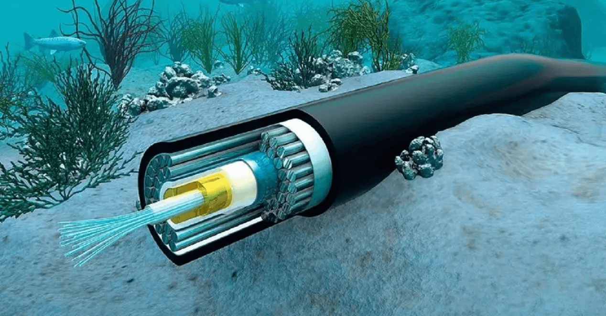
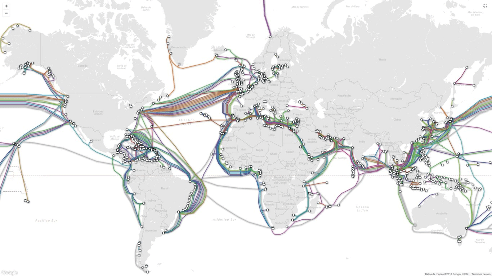
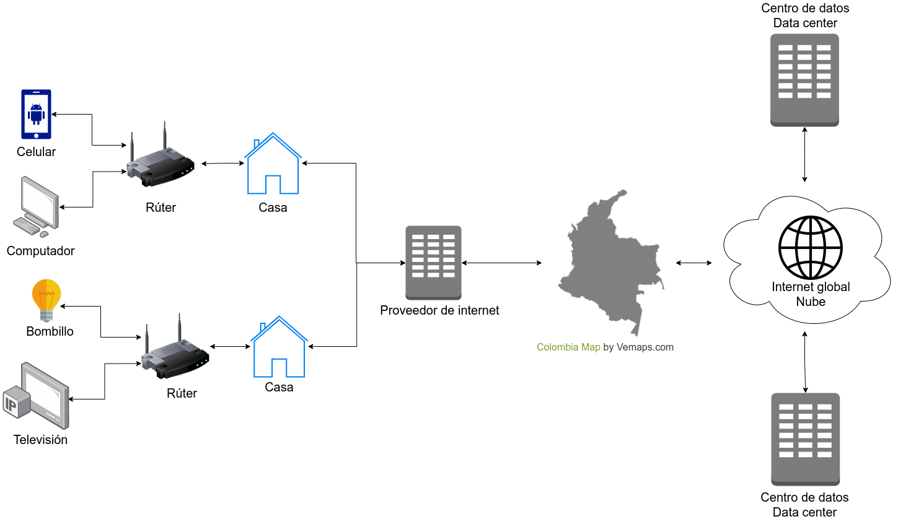
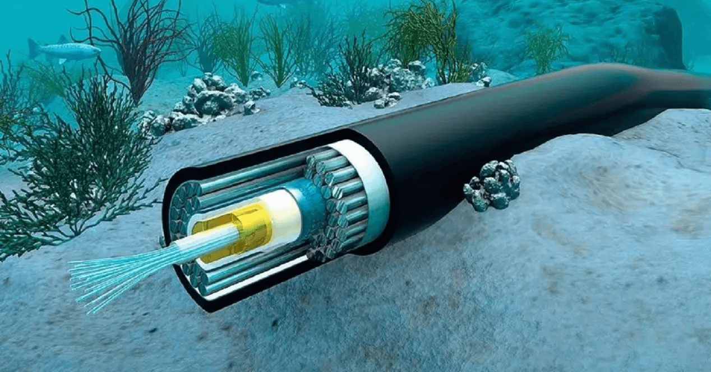
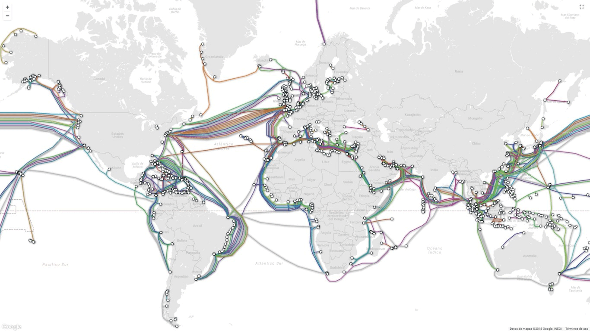

Cable submarino, de adslzone

Mapa de cables submarinos alrededor del mundo, de submarinecablemap
Es una red que nos conecta a todos a través de cables submarinos,
satélites, antenas y sirve para enviar y recibir información.
Seguramente ya habrás usado esta tecnología aluna vez, y bueno,
si estás leyendo esto de seguro en tu casa hay un rúter
de internet, ese rúter se conecta a un cable
coaxial o de fibra óptica, este
sale fuera de tu casa y pasa por los postes de energía, llega a un
edificio de tu proveedor de internet, de este sale un cable aún más
grande que llega a una de las costas de tu país y de ahí un mucho,
mucho más grande que se conecta a otros países, continentes e islas
buscando el servidor o centro de datos
que contiene a esta página web.


Cable submarino, de adslzone

Mapa de cables submarinos alrededor del mundo, de submarinecablemap
En tu hogar, el dispositivo que provee internet a los demás es el rúter, una cajita negra que generalmente tiene antenas a su alrededor y puertos para conectar por cables algunos dispositivos, además tiene una labor adicional, asigna a cada dispositivo una dirección IP que le permite saber a quién le envía información.
Por ejemplo, invitaste a tus amigos a cenar a tu nueva casa y como es la primera vez que vienen te piden la clave del internet, cuando se la das notas que por un momento el celular dice "obteniendo dirección IP" esto quiere decir que el rúter se sincroniza con el celular para cuando él pida una imagen no se la envíe al televisor y así poder ver el meme que vió en una red social, esta sería una dirección IP privada.
Así, cualquier dispositivo que se conecte a la red desde que haya espacio, tendrá una dirección IP única así como el rúter tiene una dirección IP propia para conectarse a los demás rúters alrededor del mundo mediante una dirección IP pública, puedes comprobar la tuya ingresando al siguiente enlace https://www.cual-es-mi-ip.net/